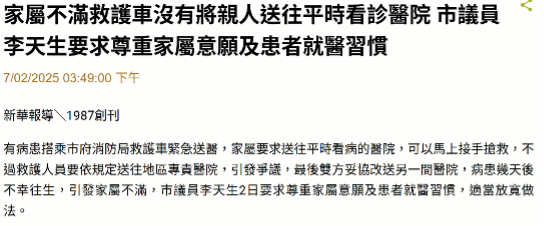
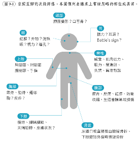
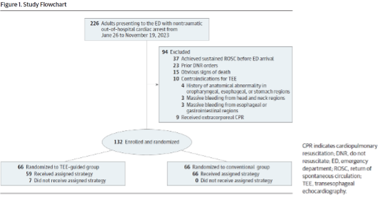
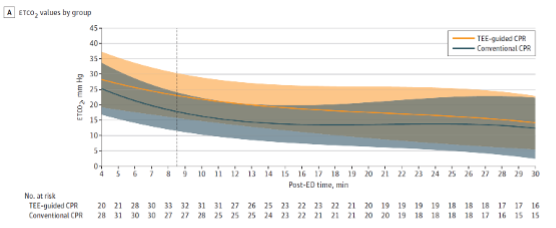
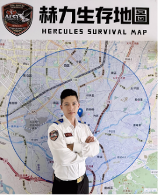
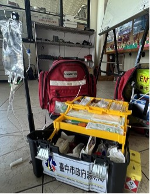
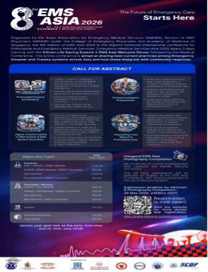

2026 年 4 月刊
台灣緊急醫療救護通訊
立場聲明｜時間就是生命，正視「就近適當」送醫原則的必要性

此聲明參考新聞事件。
主要立場
針對過往曾發生病人家屬要求救護技術員指定跨區轉送至有過往就醫紀錄但距離較遠之醫院，因救護技術員於現場基於病情判斷與「就近適當」原則予以婉拒，事後引發爭議一事，本學會特此表達立場如下：
一、本學會全力支持緊急救護人員依其專業判斷執行病患轉送決策。
二、病患應被送往最合適且具備即時處置能力之醫療院所，避免跨區遠送造成之資源浪費。
三、呼籲社會各界正視並尊重消防人員的專業判斷，理解「就近適當」轉送原則的重要性。
四、捍衛專業判斷，保障第一線救護人員免於不當究責，是維護全民安全的基石。
文獻依據
本學會上述立場之立論基礎如下：緊急救護技術員皆受過長時間的專業訓練，具備評估病情與判斷送醫適切性的能力，根據病人之生命徵象、臨床表現及現場實際狀況，選擇最能於黃金時間內提供即時處置之合適醫療院所。根據日本針對外傷引起之心跳停止病人研究，如轉送時間超過 15 分鐘，存活機率迅速滑落至 1% 以下[1]；根據一項針對台灣桃園市到院前心跳停止的研究指出，將可電擊心律的患者直接送往具備心導管中心的醫院（即適當），能顯著提高患者的存活率與獲得良好神經預後的機率。然而研究也發現，良好神經預後的機率會隨著送醫時間的延長而急遽下降[2]。另一方面，根據包含台灣多家都會區教學醫院在內的泛亞創傷預後跨國多中心世代研究顯示，對於創傷患者而言，到院前時間每延遲 10 分鐘，患者出現重度失能等不良功能性預後的風險就會增加 6%[3]。以上文獻都顯示轉送時間長短會影響危及病人之預後。若病人在現場已出現生命徵象不穩定等危急徵象，屬高風險個案，若非醫療之因素或人為壓力而轉送至距離較遠之醫院，極可能在延長的轉送時間中發生病情惡化，延誤治療契機，進而危及病人生命安全。
現行法規
依據《緊急醫療救護法》第 29 條中，明定救護技術員應依救災救護指揮中心指示前往現場急救，並將緊急傷病患送達至「就近適當」之醫療機構[4]，而「就近適當」意旨將病人送至轉送時間最短且有能力之急救責任醫院，而其中「適當」的考量也必須納入病情嚴重程度、急救責任醫院等級，以及當下是否有足夠設備和人力治療病人，並非只考量家屬指定要求送至所信任的醫學中心或有病人病歷紀錄但路程較遠的醫院。倘若因醫學中心路程較遠或人潮眾多無法提供及時救治，將對病患產生無可挽救之後果。
縣市經驗或現行做法
根據內政部消防署統計[5]，民國 90 年，全國消防人力約為 8,195 人，全年緊急救護出勤次數為 464,941 次；而到了民國 110 年，雖然消防人力增加至 16,448 人，但出勤次數卻攀升至超過 1,200,000 次。整體來看雖然消防人力成長約 2 倍，但出勤次數卻成長了近 3 倍，顯示民眾對於緊急救護的需求是節節攀升，然而消防人力的成長卻無法應對民眾救護的需求。因此如須因應民眾跨區遠送之要求，便會造成救護車離開轄區太遠和出勤時間延長，將使原本就吃緊的救護量能更加惡化，進而壓縮其他有緊急需求的病人權益。在資源有限的前提下，更應強調「就近適當」原則，以確保每位病人都能在適當時間內獲得緊急處置，同時維持整體緊急救護系統的運作效能。
總結
消防員工作需承擔高風險的救災與救護任務，隨著民眾對緊急救護需求的持續攀升，其所承受的心理與生理壓力也與日俱增。若在執行標準作業流程、依據專業判斷做出轉送決策時，卻因未滿足民眾甚至民意代表的個別要求而遭受不當質疑或懲處，不僅將重挫第一線人員的士氣，更可能使未來消防員執勤時畏首畏尾，影響整體急救效能與病人安全。
因此，我們誠摯呼籲社會各界正視並尊重消防人員的專業判斷，理解「就近適當」轉送原則的重要性，共同維護緊急救護制度的公平與效率，讓有限的資源發揮最大效益，守護更多需要即時協助的生命。
參考文獻
- Naito, H., Yumoto, T., Yorifuji, T., Nojima, T., Yamamoto, H., Yamada, T., Nakao, A. (2021). Association between emergency medical service transport time and survival in patients with traumatic cardiac arrest: a Nationwide retrospective observational study. BMC Emerg Med, 21(1), 104. doi:10.1186/s12873-021-00499-z
- Chien, C. Y., Tsai, S. L., Tsai, L. H., Chen, C. B., Seak, C. J., Weng, Y. M., ... Fang, C. T. (2020). Impact of Transport Time and Cardiac Arrest Centers on the Neurological Outcome After Out-of-Hospital Cardiac Arrest: A Retrospective Cohort Study. Journal of the American Heart Association, 9(11), e015544. doi:10.1161/JAHA.119.015544
- Chen, C.-H., Shin, S. D., Sun, J.-T., Jamaluddin, S. F., Tanaka, H., Song, K. J., ... Chiang, W.-C. (2020). Association between prehospital time and outcome of trauma patients in 4 Asian countries: A cross-national, multicenter cohort study. PLOS Medicine, 17(10), e1003360. doi:10.1371/journal.pmed.1003360
- 全國法規資料庫（1995 年 8 月 9 日）。《緊急醫療救護法》第 29 條。
- 內政部消防署（2002、2022）。《90 年度與 110 年度全國消防統計年報》。內政部消防署。
新知分享｜「標準位置」壓對了嗎？亞東紀念醫院急診團隊台灣首個 TEE 導引 CPR 隨機試驗出爐
一個值得正視的解剖盲點
AHA 指引建議胸部按壓位置在胸骨下半部，但這個「標準位置」正下方究竟是什麼構造？台灣亞東紀念醫院急診團隊透過經食道心臟超音波（TEE, Transesophageal Echocardiography）直接看進去，發現超過半數病患的標準位置正壓在主動脈瓣上，而非理想的左心室。壓迫主動脈瓣會導致舒張壓與冠狀動脈灌注壓下降；相較之下，以左心室為目標的按壓，在動物實驗中已被證實能顯著提升 ETCO₂、動脈壓及腦部灌注。TEE 的優勢在於：不中斷按壓的情況下，即時識別最大按壓區（AMC），進而引導調整位置。

試驗設計
此為隨機臨床試驗，2023 年 6 至 11 月於亞東紀念醫院急診進行，納入 132 位非創傷性 OHCA 成人，各 66 人分入 TEE 導引組與傳統 CPR 組。院前由新北市消防局以標準流程急救並以 LUCAS 機器搬運；到院後，TEE 組插管後置入探頭識別 AMC，若壓到主動脈瓣則調整 LUCAS 位置（平均往下 4.9 公分、往左 2.8 公分）；傳統組維持胸骨下半部標準位置。
結論
持續 ROSC ≥ 20 分鐘的病人 TEE 組 44%，傳統組 39%，統計上無顯著差異（OR 1.21；95% CI 0.64–2.29）。存活出院及神經學預後兩組亦無差異。然而，TEE 組在到院後第 11–20 分鐘的 ETCO₂ 顯著高於傳統組（平均差 8.61 mmHg），且兩組 CCF 均維持 94–96%，TEE 介入未增加任何嚴重併發症。


為何血流動力學改善，存活率卻沒有跟上？
關鍵在於介入時間太晚。TEE 導引調整完成時，病患距報案平均已 38 分鐘——生理條件較好者早已 ROSC，留下的幾乎都是難治型個案。動物實驗的介入時間僅 2–10 分鐘，這段差距幾乎抵銷了所有血流動力學優勢。作者因此指出，這項技術若要發揮最大效益，應考慮更早的應用場域：院內心搏驟停（IHCA），或長遠來看整合進院前急救流程。這篇研究的核心訊息並非「TEE 沒有幫助」，而是：對的方法，必須在對的時間點介入，效果才能轉化為結果。院前失去的每一分鐘，是後來任何精準介入都難以彌補的。
給三大族群的一句話
消防救護人員：胸骨下半部仍是院前的黃金準則，請持續落實高品質 CPR——那才是最無可取代的黃金投資。
醫療指導醫師：這個試驗的瓶頸是系統性的時間問題。若要突破，方向是讓 TEE 導引盡早介入，乃至整合進院前急救體系。
急診醫師：TEE 導引在急診安全可行，ETCO₂ 的改善說明概念正確。IHCA 或許才是讓這項技術真正展現價值的舞台。
人物訪談｜追求極致的救護價值——台中第三救災救護大隊赫力高級救護隊小隊長陳進鴻

從自費赴日參與國際競賽到榮獲 113 年度全國十大傑出救護技術員榜首，陳進鴻小隊長始終走在救護的最前線。他不僅自主研發救護工具優化流程，今年更肩負起台中市新成立「赫力高級救護隊」的領導重任。以下是陳進鴻小隊長的個人訪談文字整理。
一、職涯發展：技術精準與人本溫度的結合
從無力感到投入教學：追求完美的背後，源於在救護現場對生命流逝的無力感，促使他從未停止思考「如何能再多做一點」。取得高級救護技術員資格後，他投身教育訓練、品質管理，深信「多教會一個人，就可能多一雙關鍵的手在救護現場」。
國際賽事的啟發：赴東京參賽讓他體悟到，真正的專業不僅是技術，更是高壓下的細節處理與心理支持。例如在模擬地震中留下安全帽給患者，給予了「被承諾」的安全感，這讓他重新定義救護：「不只是把處置做對，更是要把人好好照顧」。
研發專利急救箱：為了減少現場翻找器材的時間成本，他研發了三層專利救護器材箱。透過加入點滴架、針具管理及治療巾配置，不僅提升衛生與安全，平均更能縮短 1 分多鐘的現場處置時間，讓「正確的事情更容易發生」。

二、對高級救護技術員的未來期許
從「技術員」走向「到院前專家」：隨著急症（如中風、心肌梗塞）增加與到院前超音波的應用，未來的 EMTP 必須具備精準的臨床判斷力。透過準確的預通知與送醫策略，能及早為病患開啟院端特殊處置的綠色通道。從「經驗導向」轉為「證據導向」，透過科學與數據反覆驗證並優化流程，逐步建立屬於台灣本土的 EMS 專業。除了臨床技術，優秀的 TP 也應具備團隊資源管理能力、品質管理思維，甚至未來導入 AI 與科技改善救護效率，並不吝於分享，帶動團隊共好。
三、對緊急救護體系未來的展望
推動雙向的無縫銜接：理想的預通知是一種專業溝通，當院前端具備穩定的判斷品質、給予正確充足的資訊，醫院端便能及早啟動綠色通道。救護、醫療就像是「同一個團隊」，讓民眾感受院前救護就像是急診醫療的延伸。醫療指導的深化：期望指導醫師除了給予線上指導，更能提供完整的「到院後回饋」與個案追蹤，從「給指令」走向「共同決策、共同承擔」。
四、對同仁的期許：傳承、韌性與安全
態度與心理韌性：勉勵後輩秉持「訓練時把假人當真人；實戰時把真人當假人」的原則，在壓力下保持冷靜，並學會適度抽離，照顧好自己才能守護更多人。落實職業安全：讓職業安全成為肌肉反射；首當其衝的是行車安全，不以風險換取時間；到現場應落實風險評估與針具管理，並期待未來救護車能導入後艙安全氣囊、環景系統等主被動安全設計。
五、結語：展望下一個十年的 EMS 願景
期許未來十年，台灣能成為亞洲 EMS 被信任與學習的標竿。未來發展應朝向三個方向：一、官方 EMS 系統的整合與建置，給予第一線穩定的支持。二、緊急救護的專責化與專業化，讓人員培育與職涯發展更清晰。三、醫療授權的進一步開放，在安全與證據基礎下，將如院前輸血等處置納入執行範圍。
「真正成熟的體系，不是依靠個人的卓越，而是讓每一個人都能穩定地把事情做好。」
好書報報｜高危情境，應變無難事

世間無常，國土危脆。近年氣候日趨極端，國際局勢多變，國內偶有攻擊事件。天災人禍往往來得措手不及，可曾想過能夠提供醫療救護的您，在這類高危情境中如何自保，又如何幫助更多人，甚至建立醫療系統的韌性。這幾年大量新名詞新系統：戰傷照護（Tactical care）、替代醫療場所、prolonged care、手術備援團隊（BORP）……等等，是否讓您一時之間不知從何下手。
《高危情境緊急應變精要》這本手冊由急診醫學會緊急醫療救護委員會、災難委員會、外傷委員會與多位外部專家合作編纂，讓您在最短時間內掌握資訊。手冊內容包含四篇範疇：從第一線緊急醫療照護、院前進階復甦原則、院內極限情境挑戰，到更高層的醫院資源調度運作，完整涵蓋醫療韌性在不同階段、您不可不知的核心要點。如果只有一本書能放進防災包，這本絕對是您不可或缺的口袋書。